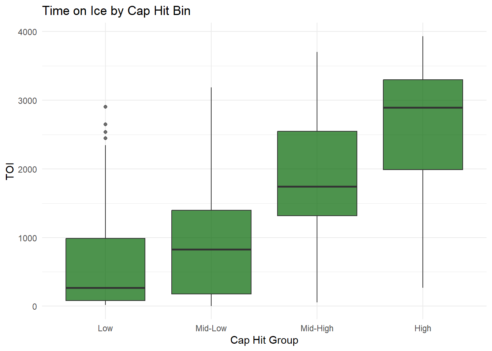
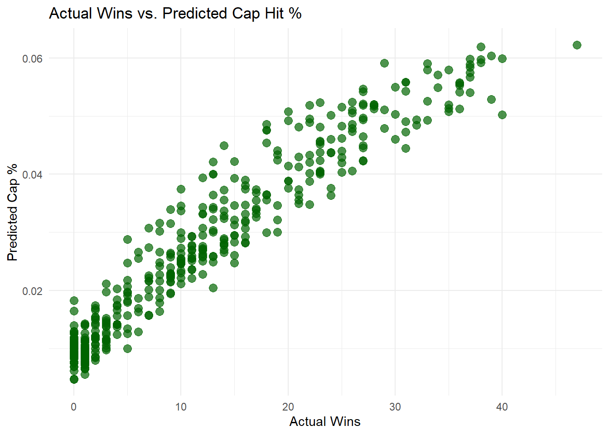

National Hockey League Goalie Salaries and Team Ranking
Do higher-paid goalies lead to teams ending the season better than others?
Abstract
This study investigates the relationship between NHL goalie salaries and team performance. Specifically, we ask whether higher-paid goalies contribute to better team outcomes, such as ranking in the top 16 teams (playoff eligibility). We examine contract values in relation to goalie performance metrics, including Wins, Save Percentage (Sv%), and Time on Ice (TOI). The goal is to identify which variables most strongly influence salary and determine whether current pay structures align with performance. We use multilevel regression analysis and interpret the significance of different predictors.
1.0 Introduction
In this paper, we aim to determine whether a National Hockey League (NHL) team that allocates more money to its goal tenders (goalies) will lead to the team achieving a ranking in the top 16 at the conclusion of the season. The reason we choose the top 16 is that it is the number of teams that advance to the playoffs. While teams ranked 15th or 16th occasionally miss the playoffs due to conference seeding, we focused on the top 16 teams by overall standings. The measure of goalies is strictly the average pay per year against a team’s Cap Hit. This shows what the goalie will earn that year, regardless of bonuses. We used the average pay, rather than the goalie’s contract amount divided by the number of years the contract was signed for, to maintain consistency. Teams have player’s pay allocated to sometimes pay out different amounts each year which means that a contract of $ 10 million dollars for 5 years would seem to be $ 2 million a year but we see that some players/goalies will get $ 3 million the first year, and only $1 million in the last year. Looking at this, it seems that a team values the players/goalies more in the first year. This also leads a team to make better deals at the end of that contract, whether it would lead to resigning a contract, extension of a contract, or a trade to another team. The reverse logic is that a player/goalie who is paid the same throughout the contract (or more at the end, which is very rare), would mean the team values the player/goalie equally throughout the contracted years. The variables used in this paper are Cap Hit, Wins, overall average Sv %, TOI, GP, and ranking of teams throughout each, rather than a total. We are also only looking at the last four seasons, ’21-’22, ’22-’23, ’23-’24, ’24-’25. This keeps the number of games played per season at 82, rather than accounting for the COVID-19 seasons where ’19-’20 and ’20-’21 were cut short. The tools used are mostly regression, looking at R^2. We will break down how we get there and why we choose to use certain variables at different times.
2.0 Literature Review
For this research, we sought to see what would lead an NHL goalie to argue for a higher pay rate. This started with seeing Igor Shesterkin, who “signed an eight-year, $ 92 million contract with the New York Rangers” (Rosen, 1) this past season. This allowed him to be the highest-paid goalie in NHL history, but it still only makes him the 9th (three-way tie) highest-paid player for the next season, ’25-’26. With that, we looked into a few things. 1. What do goalies do to drive their pay? 2. What can goalies change to possibly argue for more pay? 3. Are the fallacies in what drives goalie salaries when they sign contracts? We saw through different articles and papers that one idea that comes from Ding, Cribben, Ingolfsson, and Tran at the University of Alberta looked into whether goalies get hot in the playoffs. We chose to look at the regular season rather than the playoffs, but they saw that goalies with lower Sv% should be preferred as they will turn and start to perform better. Meaning that all goalies perform to a certain average, and if they are below this, then they will at some point start to perform above this average. Also means that the average Sv% of goalies leads to wins. We then saw with Luther III and Estep state that goalies in the salary cap era aren’t used for their higher performance alone, but how well they perform against their salary. They showed that recent Stanley Cup winners used a very low cap space allocated towards their goalies. With 8% or less allocated towards the position that receives the most TOI and makes up 10% of the team for the maximum number of players (18 skaters and 2 goalies in the regular season). This amount goes up to 13% post-trade deadline (20 skaters and 3 goalies) and continues into the playoffs with that format. So why does a position in hockey that seems to be one of the most critical get paid a lesser amount? A statement made famous by a football head coach is, Paul Bryant, “offense sells tickets, but defense wins championships”. This can explain the difference if a team is looking to sell tickets, as goalies very rarely score goals. But if a team is hunting for a championship, the Cup, and is willing to forgo higher scoring games, then they should look more into their defense, which starts and ends with a goalie.
3.0 Data
Data were collected from NHL.com (stats), NHLPA.com (CBA and cap data), and Spotrac.com (contract details). Goalies were associated with the final team they played for each season, under the assumption that final teams absorbed the cap hit.
Salary cap values used per season:
*’21-22: $ 81.5 million
*’22-23: $ 82.5 million
*’23-24 and 2024-25: $ 83.5 million
The salary floor for ’24-25 was $ 70.6 million. Minimum player salary was $ 775,000, rookie max $ 950,000, and total player max 20% of team cap (i.e., $ 17.6 million for ’24-25). Carey Price had the highest goalie salary ($ 10.5M), while Igor Shesterkin will earn $ 11.85 million in ’25-26.
3.1 Data sorting
Not all data is good data. Each team in the NHL is allowed to have 3 goalies on the roster, while only 2 can be “dressed” for the game, meaning that they are on the ice for the game or on the bench ready to go in. The third goalie is typically playing for an affiliated team in a lower level, like the American Hockey League (AHL). In the rules of the NHL, you are allowed to pull your starting goalie and put in the backup. The starting goalie for any particular game can either be the number one goalie (typically the highest-paid) or the second goalie. The idea is that goalies cannot play all 82 games in a row. They are given breaks throughout the season, but the goalie who played the last 3-20 games will be dressed for the game(s), but still able to play if the starting goalie becomes injured or has a bad game. A goalie who is having a bad game, meaning they are getting scored on without making many saves (lower Sv%), is eligible to be pulled. There is a rule in the NHL where an Emergency Backup Goalie (EBUG) will be in the building ready to play, but not dressed, for either team, meaning the EBUG can play for an away team. An example is that an EBUG can be in the stands at a Dallas Stars game, in Dallas, and play for the Anaheim Ducks, the away team, which happened on April 29th, 2022. The EBUG procedure became a rule in the 16-’17 season, and before this, it was simply set as a team would call upon a volunteer amateur goalie. This is used when a team’s starting goalie is injured during the game, along with the backup goalie. This can also happen when the starting goalie is pulled, the second goalie becomes injured, requiring the starting goalie to be put back into the game, and then becomes injured. Injuries can range widely, but it is very rare to happen to both goalies. In fact, the EBUG process has only occurred 6 times in NHL history. Since they are EBUGs, they are not allowed to be in any sense a professional goaltender or team-paid employee, meaning they are not paid by any team, and are mostly former goalies or students. The next season of ’25-’26, there will be traveling EBUGs that will not count towards the roster limit and therefore will most likely not go against the cap hit, and there is no set pay for them. Although EBUGs got TOI, they only get $500 (yes, hundred, not thousands) for the game as a professional tryout contract. Side note, they received their jersey, which must be an awesome item for the trophy case in the man cave. This rule means that an EBUG, a goalie, can help a team receive a win; they don’t affect the salary cap for that year. So, for that fact, we removed the 3 EBUGs that took the ice during the seasons we looked at. They were Thomas Hodges for the Anaheim Ducks on April 29th, 2022, with 19 minutes and 16 seconds TOI, Matt Berlin for the Edmonton Oilers on January 28th, 2023, with 2 minutes and 26 seconds, and Jett Alexander for the Toronto Maple Leafs on April 8, 2023 with 1 minute and 10 seconds. The total is 22 minutes and 52 seconds. They do not significantly affect the data set, contributing less than 23 minutes of total ice time.
3.2 Data Inspection
Let’s first look at the cap space. We briefly went over what goalies get paid. Here is are the rankings we use. In Millions:
Minimum = 0.075
25th percentile = 0.786875
Median = 1.05
75th percentile = 3.5
Maximum = 10.5
These are broken up by quantiles and are in millions of dollars. So the minimum amount of these bins is 750,000 dollars per year, which is the league minimum for any player. However, we see half of the goalies get 1,050,000 dollars per year. This is in the ranking of Cap Hit for players set at 531 out of 836 players as of last season, ’24-’25. Next is looking at how these bins spread across several factors. Cap hit against itself, Sv% (save percentage [saves against the number of shots taken]), Wins (overall wins), and TOI (time spent on ice). We used Sv% because this measures how good a goalie performs. The number of shots they can take per season ranges from 1 (rare) to 2,155 shots, while the number of saves ranges from 1 to 1,962. This has used a range for Sv% from 50% to 100%. Wins are used to show how well the Sv% can be used against not only cap hit but also against Sv%. These show which range of paid goalies get more wins, and which range of wins get higher Sv%. The last used is TOI, which will show if a goalie is paid more, do they spend more time on ice, and how much that will vary. It comes off as obvious that if a general manager/head coach pays a goalie more, they will be their starting goalie. Meaning that the goalie is trusted to win more games, so play them more often.
This box plot, Cap Hit vs itself, shows how the low and mid-low groupings are grouped close together. There is a big jump to mid-high and an even bigger jump to the high group. We also see some low-range outliers moving the data down and some high-range outliers moving the data up.

Here we see that overall, the Sv% is evenly distributed across all four groupings for the Cap Hit. This shows that regardless of what goalies are paid, they achieve roughly a similar amount of a Sv% regardless of shots taken or saved. A few outliers exist in each group, more in the lower, and then fewer and fewer as we move up in groupings.
Now we do see that higher-paid goalies do receive more wins. This is related to that you play your more trusted goalie more to either guarantee wins or in hopes of securing a win. We see general managers say that goalies who “‘stop[s] 92% of shots in of the best goalies in the world’, Tulsky said, ‘a guy who stops 91% is average’” (Kaplan page 3). This shows that paying goalies more is essentially hoping that those goalies get a 92% Sv%.
Now we see that those who are getting more wins do have a range of wins from 0 to 47. That being said, the goalie that had 47 wins in one season was Connor Hellebuyck, who played 63 games in the ’24-’25 season. Now there are 48 goalies that 0 wins in any particular season, ranging from 1 to 8 games played in those seasons.

Lastly, we see that goalies who get paid more do play more, with TOI showing against the Cap Hit. This follows the trend we’ve been seeing. So, goalies who get paid more get more TOI, bigger Sv%, and more Wins. Let us now check which teams in the ranking are paying more for goalies.

This shows that each team in the top 16 has goalies that are in the range of Cap Hit, along with the bottom 16 teams. Just explaining that each team is attempting to achieve a better ranking while paying more or less for goalies.
Breaking down now by seasons, we see that sometimes the top-ranked teams do have more goalies in the lower pay range.
Let’s look at how goalie pay ranges throughout the seasons.
4.0 Analysis
Having seen the data, let us now perform a few analyses. Starting with whether the variables we are looking at follow a normal distribution. For this, we will determine if the variables used have linear relationships, skewness from outliers, and whether we should transform the latter-mentioned models. Next will be return on investment (ROI), to show if teams are paying a fair amount on goalie salaries and getting what they ask for, more Wins, and higher Sv%. Lastly, we will create a regression model and dive deep into that.
4.1 Analysis on Normal Distributions
Let’s also examine which of these variables follow a normal distribution.


We do not see any of these variables following a normal distribution. We will check later if the residuals approximately follow a normal distribution. What matters more is if the residuals follow a normal distribution, which will be discussed later. These graphs show more about how outliers are affecting the overall data. With Sv% being the most skewed with outliers. Followed by Wins, having some. And TOI has some outliers, but less so.
4.2 Analysis for Return on Investment
The above graph shows that goalies that being paid less seem to have a lower Sv% overall, but those who are paid more do not have a higher Sv%. Also shows that the Sv% is densely grouped around 90% with TOI ranging wildly. We do have outliers that have lower pay, more TOI with a fairly high number of Wins, and a high Sv%.
This graph is a line for a linear model. Essentially line of best fit showing that there is a positive trend for more pay leading to a higher Sv%. We still see the TOI still ranging, but it does show that higher pay means more TOI.
4.3 Regression Modeling
We start with a linear regression of Sv% against Cap Hit and Wins against Cap Hit. We want to see that they have more positive effects than the other variables.
We see that our assumption is correct, but also see that there is not a constant variance. We will address this later.
Similar as stated last, those paid more perform better now in terms of Wins.

Now, those who are paid more receive more TOI.
With this graph, the total Cap Hit that each team used per season led to a variety of wins, with a wide variety of variance. By this, we mean what each team paid for all goalies used, starting, backup, and third string (or more). We’ve highlighted the Stanley Cup winners for each season observed. The cup was used instead of the top 16; those teams had to be in the top 16. Let’s show this again by season.

We see what was expected, the teams in the top 16 are above, on, or slightly below the regression. Not one team in the bottom 16 is above. An obvious statement, but it is useful to see.
4.3 Regression for Cap Hit against Salary Cap.
Let us now change how we look at pay for goalies. Each year, as stated before, has different salary caps that each team is able to pay for their players. We will take the goalie pay and modify it to show the percentage of the salary cap for their respective teams. For example, in the ’21-’22 season, Carey Price was the highest-paid goalie at $ 10.5 million that year. That year, having a $ 81.5 million salary cap, Price received 12.88% of his team’s (Montreal Canadiens) salary cap. We hope this will show that the pay against the used variables will be better.
4.3.1 Prediction Regression Model
Through this model, we see that with the predictor variables (Sv%, Wins, and TOI), we see a positive trend for the predicted relationship between goalie performance and pay. The positive coefficients suggest that goalies with higher Sv%, Wins, and TOI tend to earn more money for their respective team’s salary cap. We see an increase in Sv%, by will change the Cap Hit % by $ rb_sv_dollars`. Similarly, another win will change their pay by 934.6522307}, and another minute on ice will change their pay by 1.1143395^{-5}. We start the model with an intercept with 0.0317817. Which leads us to the equation of \(\hat{y} = b_0 + b_1*Sv\% + b_2*Wins + b_3*TOI + \epsilon\). This is: $ = $ 0.0317817 + -0.0272011Sv% + 2.9722564^{-4}Wins + 1.1143395^{-5}TOI + \(\epsilon\). We have an \(R^2\) of 0.387374, , which is the best and shows that there is a lot of noise in this model.
Above, we see the negative relationship between the predicted Cap Hit % against actual Sv%. Consequently, paying more does not lead to higher Sv%.

From this, we can see that the more Wins there are, we predict high pay.
And lastly, more TOI, we predict more pay.
4.3.2 Test Model for Potential Problems
We tested a few items: multicollinearity, autocorrelation, and heteroskedasticity. For multicollinearity, we used a variance inflation factor calculation for our predictors, and they have a value of:
Cap Hit off of Percentage we have 8.84482
Sv% we have 1.10493
and with TOI we have 8.71104
With these values being great than 1, we do some correlation with each other.
For autocorrelation we used a Durbin-Watson (DW) test, and we have a value of 1.93713, which is very close to 2 meaning have no evidence of autocorrelation.
For heteroskedasticity we tested this by using a Breusch-Pagan (BP) test and residual plots. For the BP test value we have 2^{-5}, which means there is strong evidence to suggest heteroskedasticity. We also see this with residual plots below.

We see with these plots the following:
*The “Residuals vs Fitted” shows that the residuals do follow a pattern, mostly at first, but we would’ve liked to see no pattern through the whole plot.
*For the “Q-Q Residuals,” the residuals at the front and back end do not follow the diagonal line, so they do not follow a normal distribution that well.
*With the “Scale-Location,” the line is not flat, meaning the variance is not constant.
And the “Residuals vs Leverage” shows a few outliers and high-leverage points, so a few observations are influencing the model as a whole. This suggests that we should modify the model. We test the model with a t-test using robust standard errors to correct for heteroskedasticity.
Though this we see in order of significance with p-values, TOI 6^{-5}, (Very Significant), Sv% 0.00809, (Significant), wins 0.35221, (Not Significant). with values being less than 0.0001, to 0.01, to 0.05 to 0.1 are the levels we see of significance. Seeing this, we are encourage to remove Wins from the model. Let us see if this is the case with a step-wise regression model.
4.3.3 Step-Wise Regression
This process tells us that we should drop Wins and Sv% as variables used in the regression. With visualization:
Conculsion
With our results, we can say that goalies who get more time on ice should receive a greater percentage of pay against the team’s salary cap. We found this through inspection of the data, regression analysis, and finally, identified which variables are more important than others. These goalies that do receive more already tend to get more time on ice, but this shows that they should argue for more pay when their contract comes up for renewal. If a goalie starts to get more and more play time, then that should serve as evidence that they deserve more pay, regardless of wins and save percentage. We can infer this as once a team feels confident in a goalie, then they will start to shift towards playing that goalie more than others. There can be statements made that this may only occur because the starting goalie may be injured for a while or out for the season. Although this is true, that would be overlooking the many goalies that can be called up from lower-level leagues or even trades for other goalies. Hopefully, this study can provide goalies with help in the negotiations for contract signing. More time on ice should lead to more wins with a higher save percentage, granting them contracts with more pay each year.
5.0 Suggest Areas of Further Research
Further research would include more variables in selection, i.e. does it matter which hand a goalie catches and does that lead to better performance. Can also look when a goalie gets traded and receives a pay increase, what variables led to this decision. Lastly, when a goalie receives a pay reduction, is this soley based on age in the league or are the other varaibles that could have led to this.
6.0 Works Cited
“2025 NHL Cap Hit Rankings.” Spotrac, www.spotrac.com/nhl/rankings/player/_/year/2025/sort/cap_total. Accessed 8 July 2025.
“Collective Bargaining Agreement.” The PA | NHLPA.Com, 16 Sept. 2012, nhlpa.com/the-pa/cba.
Ding, Likang, et al. Do NHL Goalies Get Hot in the Playoffs? A Multilevel Logistic Regression Analysis, University of Alberta School of Business, 9 May 2024, arxiv.org/html/2102.09689v2#abstract.
Emily KaplanNov 18, 2024. “Why Paying Goalies Is so Complicated in Today’s NHL.” ESPN, ESPN Internet Ventures, 18 Nov. 2024, www.espn.com/nhl/story/_/id/42446173/goalie-contracts-today-nhl-igor-shesterkin-jeremy-swayman.
Luther, Robert, and Steven C. Estep. “The Goalie Paradox: Why Elite Goalies Don’t Guarantee Playoff Success and Predictions for the 2025 Stanley Cup Playoffs.” Journal of Sports & Enterainment Law, Havard Law School, 26 Apr. 2025, journals.law.harvard.edu/jsel/2025/04/the-goalie-paradox-why-elite-goalies-dont-guarantee-playoff-success-and-predictions-for-the-2025-stanley-cup-playoffs/.
“NHL Stats.” NHL.Com, National Hockey League, www.nhl.com/stats/goalies?reportType=season&seasonFrom=20212022&seasonTo=20242025&gameType=2&page=1&pageSize=100. Accessed 8 July 2025.
Rosen, Dan. “Shesterkin Signs 8-Year, $92 Million Contract with Rangers.” NHL.Com, National Hockey League, 8 Dec. 2024, www.nhl.com/news/igor-shesterkin-signs-eight-year-contract-with-new-york-rangers#:~:text=The%20deal%20makes%20Shesterkin%20the,Canadiens%20on%20July%202%2C%202017.